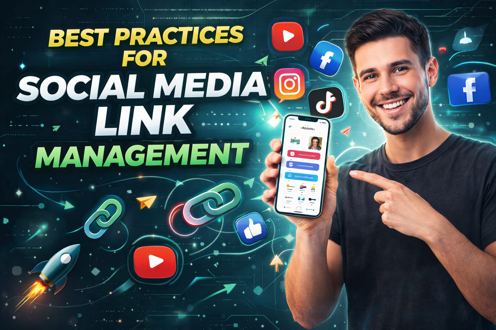

Understanding YouTube Link Formats and How to Use Them

In the complex ecosystem of digital video, a hyperlink is often treated as a simple utility—a string of characters that takes a user from point A to point B. For many creators, copying the URL from the browser bar and pasting it everywhere feels sufficient. However, this "one-size-fits-all" approach ignores a critical reality: not all YouTube links are created equal.
YouTube supports multiple link formats, each with its own structure, behavior, and ideal use case. A standard long-form URL behaves differently than a shortened youtu.be link. A desktop link behaves differently than a mobile deep link. Using the wrong format in the wrong context can introduce friction, reduce watch time, and ultimately hurt your channel's growth.
Understanding these nuances is no longer just a technical detail; it is a strategic imperative. In this comprehensive guide, we will dissect the anatomy of YouTube links, explore the hidden mechanics of how they function across different devices, and reveal how choosing the right format can unlock higher engagement and better algorithmic performance.
1. The Standard Long-Form URL
The most common link format is the standard long-form URL. It looks like this:
https://www.youtube.com/watch?v=dQw4w9WgXcQ
This is the default format you get when you click "Share" on a desktop browser or copy the address from the top of the page.
How It Works
This URL points directly to the specific video resource on YouTube's domain. The watch parameter tells the server to load the video player interface, and the v parameter specifies the unique Video ID.
Best Use Cases
- Desktop Emails & Blogs: Since desktop users typically have the YouTube tab open or easy access to a full browser, this format works perfectly.
- QR Codes: Long URLs are sometimes preferred for QR codes if you want the destination to be human-readable upon scanning (though shorteners are often better for scan speed).
- SEO Context: Having the full domain path can sometimes be beneficial for search engine indexing when embedded in articles.
The Downside
On mobile devices, this link often defaults to opening in a mobile web browser (like Chrome or Safari) rather than the native YouTube app. This introduces the "login wall"—users might not be logged in on the browser, preventing them from subscribing or commenting easily. This friction can kill conversion rates.
2. The Shortened youtu.be Link
YouTube's native shortener creates a concise, clean link that looks like this:
https://youtu.be/dQw4w9WgXcQ
This format strips away the /watch?v= clutter, leaving just the domain and the Video ID.
Why Use It?
Aesthetics and Trust: Long URLs can look spammy, especially on platforms with character limits like X (Twitter). A short link looks professional and trustworthy.
Character Count: Saving 15-20 characters might seem small, but in a tweet or an Instagram bio, every character counts.
Behavioral Nuance
While cleaner, the youtu.be link is still a standard web redirect. On many social platforms (like Instagram DMs or TikTok comments), clicking this link will still force the user into an in-app browser view rather than launching the YouTube app. It solves the aesthetic problem, but not necessarily the technical friction problem.
3. Playlist and Channel Links
Not all links lead to a single video. Strategic creators often use links to drive traffic to collections of content or their main hub.
Playlist Links
Format: youtube.com/playlist?list=PL...
These are powerful tools for increasing Session Time, a key metric for YouTube's algorithm. When a user clicks a playlist link, they enter a "binge mode." Once one video ends, the next plays automatically.
- Strategy: Instead of linking to your latest video in your bio, link to a "Start Here" or "Best Of" playlist. This keeps new viewers on your channel longer, signaling to YouTube that your content is valuable.
Channel Links
Format: youtube.com/@YourChannelName or youtube.com/channel/UC...
These links direct users to your homepage. They are ideal for general brand awareness or when you want users to browse your entire library. However, they have a higher bounce rate because the user has to make a choice about what to watch next. Use these sparingly unless your goal is purely subscriber growth rather than immediate views.
4. The Game Changer: App-Opening (Deep) Links
This is the most critical format for modern growth, yet it is the most misunderstood. An App-Opening Link (or Deep Link) is a smart URL designed to detect the user's device and open the content directly in the native YouTube app if it is installed.
Why It Matters
Over 70% of YouTube watch time comes from mobile devices. The native app offers a superior experience: faster loading, better buffering, and seamless login.
When a user clicks a standard link on Instagram, they often land in a stripped-down mobile website. They might see a prompt to "Open in App," but many users ignore it or find it annoying. An app-opening link bypasses this step entirely.
How It Works
Tools like OpeninYoutube generate these smart links. When clicked:
- The link checks the device OS (iOS vs. Android).
- It verifies if the YouTube app is present.
- If yes, it launches the app directly to the video.
- If no, it gracefully falls back to the mobile website.
This seamless transition removes friction, leading to higher retention rates and more subscriptions because the user is already logged in.
Key Insight: Views generated from the native app are often weighted more heavily by the algorithm than views from external browsers because they indicate a higher quality user session.
5. Timestamped Links
You can append a timestamp to any standard or short link to force the video to start at a specific moment.
https://youtu.be/dQw4w9WgXcQ?t=45
This is incredibly useful for:
- Tutorials: Link directly to the step you are discussing in a community post.
- Highlights: Share the funniest 30 seconds of a long podcast to tease the full episode.
- Corrections: If you made an error at 2:00, you can link to the correction at 5:00 in the comments.
Note: Timestamps work on both standard and short URLs, but ensure you test them on mobile, as some older app versions might ignore the timestamp parameter.
Strategic Selection: Which Link for Which Platform?
Knowing the formats is step one. Knowing where to use them is step two. Here is your cheat sheet for maximum impact.
Instagram & TikTok Bios
Winner: App-Opening Link (via a Link-in-Bio tool)
Since you only get one link, make it count. Use a tool that allows you to create a landing page with buttons that utilize deep linking. Do not paste a raw youtube.com link here; it looks unprofessional and performs poorly.
Twitter (X) Posts
Winner: Shortened youtu.be or Branded Short Link
Character count is king. Use the shortest version possible. If you have a branded domain (e.g., go.yourbrand.com/video), use that for maximum trust.
YouTube Community Tab & Comments
Winner: Standard or Playlist Link
Since the user is already on YouTube, deep linking is less critical. Here, your goal is often to increase session time, so linking to a Playlist is often the superior strategic move.
Email Newsletters
Winner: App-Opening Link
Email clients vary wildly. Some open links in internal browsers that block scripts. An app-opening link ensures that whether your subscriber uses Gmail, Apple Mail, or Outlook, they get the best possible viewing experience on their specific device.
WhatsApp & Telegram
Winner: App-Opening Link
These are highly mobile-centric platforms. Sending a standard link here often results in the "in-app browser" trap. Deep links ensure your message group stays engaged within the high-performance YouTube app.
The "Fallback" Strategy
Never assume your audience has the app. Always use a smart link tool that provides a fallback.
If a user clicks your link on a desktop computer where the app isn't installed, the link must automatically redirect to the desktop website. If it tries to force an app download or breaks, you lose the viewer. Robust link management tools handle this logic automatically.
Common Mistakes to Avoid
- Using Generic Shorteners for Deep Linking: Tools like Bit.ly shorten links but do not inherently provide deep-linking capabilities. They often break the protocol required to open the YouTube app. Use tools specifically designed for app-opening.
- Ignoring Mobile Testing: Always test your links on both iOS and Android before publishing. What works on an iPhone might behave differently on a Samsung Galaxy.
- Link Rot: If you change your channel handle or delete a playlist, update your links. Broken links destroy trust and waste traffic.
- Overusing Channel Links: Don't send traffic to your homepage unless necessary. Send them to specific value (videos/playlists) to reduce bounce rates.
Warning: Be cautious of "clickjacking" or misleading link structures. Ensure the link destination matches the user's expectation. Misleading users damages your reputation and can lead to penalties from social platforms.
Conclusion: Precision Over Convenience
It is tempting to take the path of least resistance and copy-paste the first URL you see. But in the competitive landscape of 2026, convenience is the enemy of growth. Every fraction of a second of load time, every extra click required to log in, and every moment of confusion costs you engagement.
By understanding the different YouTube link formats and deploying them strategically, you take control of the user journey. You ensure that whether a fan finds you on Twitter, Instagram, or Email, they are guided smoothly to your content in the best possible environment.
Stop treating links as an afterthought. Treat them as the critical bridge they are. Optimize your formats, embrace deep linking, and watch as your friction-free strategy translates into real, measurable growth.
Use the Right Link Every Time
Optimize your YouTube links for every platform and device.
Optimize My Links